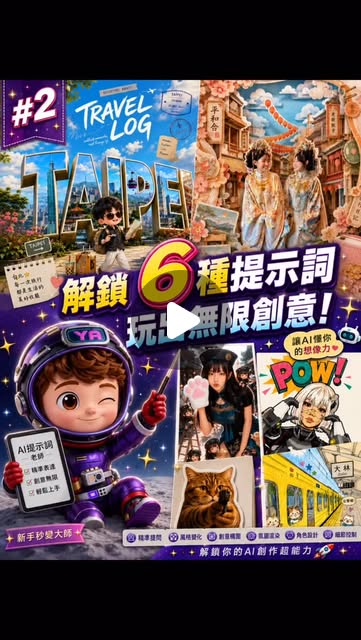

Threads｜Ai星人半糖：六種 AI 圖像風格提示詞玩法與留言門檻歸檔
來源是 Ai星人半糖｜AI訓練師（@chatgpt168）在 Threads 發布的短貼文，主題是六種 AI 圖像風格提示詞玩法。這則內容不是產品發表或官方教學，而是社群提示詞素材入口；公開 Threads 只列出風格名稱，完整提示詞被放在 IG 留言自動回覆流程中。

公開 Threads 內容
Threads 可見 canonical URL 為 `https://www.threads.com/@chatgpt168/post/DbIuTcxGTpx`，頁面擷取時主串顯示約 50 次瀏覽。公開貼文文字為：
> Q版小人分身、Q版旅遊海報、少女剪紙插畫風、幼童蠟筆塗鴉風、一鍵冰箱貼、矢量波普POP風
> IG留言才有自動回覆喔
公開頁面沒有出現完整提示詞、模型名稱、操作步驟或外部文章連結；因此本篇只歸檔公開可見資訊與封面，不把未取得的 IG 自動回覆內容寫成可驗證提示詞。
圖片 / 封面描述
保存的來源圖看起來是 Threads 影片或輪播封面，中間有播放按鈕。畫面主標為「解鎖 6 種提示詞 玩出無限創意！」，左上角有「#2」，上方展示藍色「TRAVEL LOG / TAIPEI」旅遊海報與少女剪紙風場景；下方有 Q 版太空人、照片轉風格示例、貓咪照片與「POW!」漫畫式 POP 圖像。畫面底部可見「新手秒變大師」與「解鎖你的 AI 創作超能力」等字樣。
這張圖可作為來源封面與風格索引證據，但不能從圖中還原完整提示詞；它比較像「提示詞合集的宣傳縮圖」。
查核與判讀
這則貼文的可查核重點不是某個模型功能，而是提示詞風格清單本身：
- Q 版 / Chibi 人物：常見於 AI 照片轉插畫、角色小人分身、玩具感或貼紙感素材。
- Q 版旅遊海報：把地標、人物、城市名稱與旅行貼紙元素組成海報式構圖。
- 少女剪紙插畫風：偏向 layered paper cut、柔和色彩與手作紙藝質感。
- 幼童蠟筆塗鴉風：刻意模擬童趣、粗線條、低精度與彩色筆觸。
- 一鍵冰箱貼：把照片或角色轉成小型磁貼 / sticker / souvenir 風格。
- 矢量波普 POP 風：常見粗黑線、半色調、漫畫爆炸框、高飽和配色與文字效果。
Brave 搜尋能找到大量 Chibi、AI art style prompts、Pop art prompt 等第三方素材頁，顯示這些風格在社群提示詞內容中相當常見；但因原貼未提供完整 prompt，本篇不引用第三方模板作為原作者內容，也不把「IG 留言自動回覆」視為已公開資料。
實務判讀
這類貼文適合收藏在 AI 學習雷達中作為「風格靈感索引」，不是作為可直接複製的技術教學。它對課程或工作坊的價值在於：可以把「風格詞」拆成可教的 Prompt 組件，示範同一張人物或場景照片如何透過風格、構圖、材質、輸出比例、文字排版等條件，生成不同社群素材。
可延伸成一個簡單練習流程：
- 先選一張合法授權或自己拍攝的照片；
- 指定目標風格，例如 Chibi、旅遊海報、剪紙、蠟筆、冰箱貼、Pop art；
- 加入構圖與用途，例如 IG 貼文、LINE 貼圖、旅遊封面、課程暖場圖；
- 明確限制不改變人物身份、不使用未授權肖像、不加入誤導性品牌標誌；
- 生成後檢查文字是否拼錯、是否過度美化或侵犯肖像權。
補充邊界
- Threads 公開內容沒有提供完整提示詞；若要取得原作者模板，需依其 IG 留言流程，並注意平台與個資互動邊界。
- 圖像生成涉及人物照片時，應確認肖像、同意、授權與可公開使用範圍；尤其是 Q 版分身、冰箱貼與旅遊海報容易被用於社群曝光。
- 風格模仿應避免直接要求在世藝術家或受保護 IP 的精確風格；課程教學可改用材質、構圖、色彩、年代、媒介等描述。
- AI 生成圖中文字常有錯字，旅遊海報、POP 漫畫框與標語類素材需人工校對。